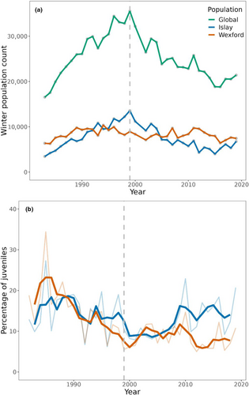

<!DOCTYPE html>
<html xmlns="http://www.w3.org/1999/xhtml" lang="en" xml:lang="en"><head>

<meta charset="utf-8">
<meta name="generator" content="quarto-1.3.433">

<meta name="viewport" content="width=device-width, initial-scale=1.0, user-scalable=yes">

<meta name="author" content="Salma Abdel-Raheem, Emily Nazario, Allison Payne">

<title>Manuscript</title>
<style>
code{white-space: pre-wrap;}
span.smallcaps{font-variant: small-caps;}
div.columns{display: flex; gap: min(4vw, 1.5em);}
div.column{flex: auto; overflow-x: auto;}
div.hanging-indent{margin-left: 1.5em; text-indent: -1.5em;}
ul.task-list{list-style: none;}
ul.task-list li input[type="checkbox"] {
  width: 0.8em;
  margin: 0 0.8em 0.2em -1em; /* quarto-specific, see https://github.com/quarto-dev/quarto-cli/issues/4556 */ 
  vertical-align: middle;
}
/* CSS for syntax highlighting */
pre > code.sourceCode { white-space: pre; position: relative; }
pre > code.sourceCode > span { display: inline-block; line-height: 1.25; }
pre > code.sourceCode > span:empty { height: 1.2em; }
.sourceCode { overflow: visible; }
code.sourceCode > span { color: inherit; text-decoration: inherit; }
div.sourceCode { margin: 1em 0; }
pre.sourceCode { margin: 0; }
@media screen {
div.sourceCode { overflow: auto; }
}
@media print {
pre > code.sourceCode { white-space: pre-wrap; }
pre > code.sourceCode > span { text-indent: -5em; padding-left: 5em; }
}
pre.numberSource code
  { counter-reset: source-line 0; }
pre.numberSource code > span
  { position: relative; left: -4em; counter-increment: source-line; }
pre.numberSource code > span > a:first-child::before
  { content: counter(source-line);
    position: relative; left: -1em; text-align: right; vertical-align: baseline;
    border: none; display: inline-block;
    -webkit-touch-callout: none; -webkit-user-select: none;
    -khtml-user-select: none; -moz-user-select: none;
    -ms-user-select: none; user-select: none;
    padding: 0 4px; width: 4em;
  }
pre.numberSource { margin-left: 3em;  padding-left: 4px; }
div.sourceCode
  {   }
@media screen {
pre > code.sourceCode > span > a:first-child::before { text-decoration: underline; }
}
</style>


<script src="paper_files/libs/clipboard/clipboard.min.js"></script>
<script src="paper_files/libs/quarto-html/quarto.js"></script>
<script src="paper_files/libs/quarto-html/popper.min.js"></script>
<script src="paper_files/libs/quarto-html/tippy.umd.min.js"></script>
<script src="paper_files/libs/quarto-html/anchor.min.js"></script>
<link href="paper_files/libs/quarto-html/tippy.css" rel="stylesheet">
<link href="paper_files/libs/quarto-html/quarto-syntax-highlighting.css" rel="stylesheet" id="quarto-text-highlighting-styles">
<script src="paper_files/libs/bootstrap/bootstrap.min.js"></script>
<link href="paper_files/libs/bootstrap/bootstrap-icons.css" rel="stylesheet">
<link href="paper_files/libs/bootstrap/bootstrap.min.css" rel="stylesheet" id="quarto-bootstrap" data-mode="light">


</head>

<body class="fullcontent">

<div id="quarto-content" class="page-columns page-rows-contents page-layout-article">

<main class="content" id="quarto-document-content">

<header id="title-block-header" class="quarto-title-block default">
<div class="quarto-title">
<h1 class="title">Manuscript</h1>
</div>


<div class="quarto-title-meta">

    <div>
    <div class="quarto-title-meta-heading">Author</div>
    <div class="quarto-title-meta-contents">
             <p>Salma Abdel-Raheem, Emily Nazario, Allison Payne </p>
          </div>
  </div>
    
  
    
  </div>
  

</header>

<section id="paper-description" class="level2">
<h2 class="anchored" data-anchor-id="paper-description">Paper Description</h2>
<p><a href="https://onlinelibrary.wiley.com/doi/pdf/10.1002/ece3.10281">Ozsanlav-Harris et al.2023</a> looks at two UK sub-populations of the Greenland white-fronted goose (<em>albifrons flavirostris</em>): one at Islay and one at Wexford. They compared each sub-population with a meta-population to see if trends in the sub-populations mirrored trends in the meta-population. Their findings have implications for conservation, since management decisions are sometimes made for an entire species without taking into variation between populations. We wanted to replicate figure 2, in which the authors explore how winter population counts and percentagage of juveniles vary between 1983 and 2018. Through this figure, the authors visualize how populations have declined over the course of the study period, and whether the sub-populations mirror the meta-population.</p>
<div class="quarto-figure quarto-figure-center">
<figure class="figure">
<p></p>
<figcaption class="figure-caption">Figure 2 from Ozsanlav-Harris et al., 2023.</figcaption>
</figure>
</div>
</section>
<section id="data-summary" class="level2">
<h2 class="anchored" data-anchor-id="data-summary">Data Summary</h2>
<p>Ozsanlav-Harris et al.&nbsp;2023 plotted how Ireland sub-population counts and percentages of juvenile Greenland White Fronted Geese changed from 1983 to 2019 using annual census data. This team was specifically interested in understanding how population counts and reproduction changed with varying temperatures and precipitation. From this set of figures, they identified that the metapopulation has declined since 1999 but only one of the metapopulations has mirrored this trend.</p>
<p>The data provided by Ozsanlav-Harris et al.&nbsp;2023 was saved as two CSV files. The CSV file for the entire metapopulation included the year the spring census was conducted, the whole population size estimate, and the counts per metapopulation. We then modified this original file so that the metapopulation data was in long format rather than in wide. The CSV file for the juveniles included the year and the percent juveniles for each metapopulation.</p>
</section>
<section id="analysis-summary" class="level2">
<h2 class="anchored" data-anchor-id="analysis-summary">Analysis Summary</h2>
<p>Our data analysis comprised of regenerating the Figure 2 of the original manuscript. The data provided by the authors was well documented and relatively straightforward to work with and required minimal manipulation to fully reproduce both panels of our figure.</p>
<p>To visualize the global, Islay, and Wexford population counts for Fig. 2A, we reformatted the <code>GWfG Pop counts.csv</code> using the <code>pivot_longer()</code> command. This allowed us to consolidate data such that instead of each population having an associated data column populated with population counts, we made one <code>site</code> and one <code>count</code> column that together describe the site and its associated population count. This manipulation allowed us to specify <code>site</code> as a value on to which we could map different <code>geom_line()</code> values and visualize the three different population counts.</p>
<div class="cell" data-indclude="false">
<div class="sourceCode cell-code" id="cb1"><pre class="sourceCode r code-with-copy"><code class="sourceCode r"><span id="cb1-1"><a href="#cb1-1" aria-hidden="true" tabindex="-1"></a><span class="fu">library</span>(tidyverse) </span></code><button title="Copy to Clipboard" class="code-copy-button"><i class="bi"></i></button></pre></div>
<div class="cell-output cell-output-stderr">
<pre><code>── Attaching core tidyverse packages ──────────────────────── tidyverse 2.0.0 ──
✔ dplyr     1.1.2     ✔ readr     2.1.4
✔ forcats   1.0.0     ✔ stringr   1.5.0
✔ ggplot2   3.4.2     ✔ tibble    3.2.0
✔ lubridate 1.9.2     ✔ tidyr     1.3.0
✔ purrr     1.0.1     
── Conflicts ────────────────────────────────────────── tidyverse_conflicts() ──
✖ dplyr::filter() masks stats::filter()
✖ dplyr::lag()    masks stats::lag()
ℹ Use the ]8;;http://conflicted.r-lib.org/conflicted package]8;; to force all conflicts to become errors</code></pre>
</div>
<div class="sourceCode cell-code" id="cb3"><pre class="sourceCode r code-with-copy"><code class="sourceCode r"><span id="cb3-1"><a href="#cb3-1" aria-hidden="true" tabindex="-1"></a><span class="fu">library</span>(zoo) <span class="co">#used for calculating moving average </span></span></code><button title="Copy to Clipboard" class="code-copy-button"><i class="bi"></i></button></pre></div>
<div class="cell-output cell-output-stderr">
<pre><code>
Attaching package: 'zoo'

The following objects are masked from 'package:base':

    as.Date, as.Date.numeric</code></pre>
</div>
<div class="sourceCode cell-code" id="cb5"><pre class="sourceCode r code-with-copy"><code class="sourceCode r"><span id="cb5-1"><a href="#cb5-1" aria-hidden="true" tabindex="-1"></a><span class="fu">library</span>(here)</span></code><button title="Copy to Clipboard" class="code-copy-button"><i class="bi"></i></button></pre></div>
<div class="cell-output cell-output-stderr">
<pre><code>here() starts at /Users/allisonpayne/Documents/Github/BIOE215/finalproject</code></pre>
</div>
</div>
<div class="cell">
<div class="sourceCode cell-code" id="cb7"><pre class="sourceCode r code-with-copy"><code class="sourceCode r"><span id="cb7-1"><a href="#cb7-1" aria-hidden="true" tabindex="-1"></a>pop_count <span class="ot">&lt;-</span> <span class="fu">read.csv</span>(<span class="fu">here</span>(<span class="st">"data/OG/GWfG Pop counts.csv"</span>))</span>
<span id="cb7-2"><a href="#cb7-2" aria-hidden="true" tabindex="-1"></a>pop_count_long <span class="ot">&lt;-</span> <span class="fu">pivot_longer</span>(<span class="at">data =</span> pop_count, </span>
<span id="cb7-3"><a href="#cb7-3" aria-hidden="true" tabindex="-1"></a>                          <span class="at">cols =</span> <span class="fu">c</span>(<span class="st">"Population.estimate"</span>, <span class="st">"Wexford"</span>, <span class="st">"Islay"</span>), </span>
<span id="cb7-4"><a href="#cb7-4" aria-hidden="true" tabindex="-1"></a>                          <span class="at">names_to =</span> <span class="st">"site"</span>, <span class="at">values_to =</span> <span class="st">"count"</span>) <span class="sc">%&gt;%</span> </span>
<span id="cb7-5"><a href="#cb7-5" aria-hidden="true" tabindex="-1"></a>  <span class="fu">select</span>(<span class="sc">-</span><span class="fu">c</span>(<span class="st">"Missing.data"</span>, <span class="st">"X"</span>)) <span class="co">#unnecessary columns</span></span>
<span id="cb7-6"><a href="#cb7-6" aria-hidden="true" tabindex="-1"></a></span>
<span id="cb7-7"><a href="#cb7-7" aria-hidden="true" tabindex="-1"></a><span class="fu">head</span>(pop_count)</span></code><button title="Copy to Clipboard" class="code-copy-button"><i class="bi"></i></button></pre></div>
<div class="cell-output cell-output-stdout">
<pre><code>  spring Population.estimate Wexford Islay Missing.data  X
1   1983               16540    6360  3440            N NA
2   1984               17540    6270  4200            N NA
3   1985               19950    7590  4720            N NA
4   1986               21890    7940  5670            N NA
5   1987               23280    7780  6490            N NA
6   1988               24570    8780  7310            N NA</code></pre>
</div>
<div class="sourceCode cell-code" id="cb9"><pre class="sourceCode r code-with-copy"><code class="sourceCode r"><span id="cb9-1"><a href="#cb9-1" aria-hidden="true" tabindex="-1"></a><span class="fu">head</span>(pop_count_long)</span></code><button title="Copy to Clipboard" class="code-copy-button"><i class="bi"></i></button></pre></div>
<div class="cell-output cell-output-stdout">
<pre><code># A tibble: 6 × 3
  spring site                count
   &lt;int&gt; &lt;chr&gt;               &lt;int&gt;
1   1983 Population.estimate 16540
2   1983 Wexford              6360
3   1983 Islay                3440
4   1984 Population.estimate 17540
5   1984 Wexford              6270
6   1984 Islay                4200</code></pre>
</div>
</div>
<p>We indexed the <code>pop_count</code> dataframe to find the year at which the population count was highest. We saved this value to its own vector called <code>max_mp</code> so that we could recreate the dashed line observed in Fig. 2 which represents the metapopulation peak.</p>
<div class="cell">
<div class="sourceCode cell-code" id="cb11"><pre class="sourceCode r code-with-copy"><code class="sourceCode r"><span id="cb11-1"><a href="#cb11-1" aria-hidden="true" tabindex="-1"></a>max_mp <span class="ot">&lt;-</span> pop_count<span class="sc">$</span>spring[<span class="fu">which.max</span>(pop_count<span class="sc">$</span>Population.estimate)]</span></code><button title="Copy to Clipboard" class="code-copy-button"><i class="bi"></i></button></pre></div>
</div>
<p>To visualize the proportion of young geese observed and calculate the 3-year running average in the Islay and Wexford sub-populations for Fig. 2B, we used the <code>zoo</code> package and <code>roll_mean ()</code> function to calculate the 3-year running average. The paper did not specify how the running average was calculated, but we assumed a default of <code>center</code> alignment in which the mean is calculated by using one value to the left and another to the right of the central value.</p>
<div class="cell">
<div class="sourceCode cell-code" id="cb12"><pre class="sourceCode r code-with-copy"><code class="sourceCode r"><span id="cb12-1"><a href="#cb12-1" aria-hidden="true" tabindex="-1"></a>young_count <span class="ot">&lt;-</span> <span class="fu">read.csv</span>(<span class="fu">here</span>(<span class="st">"data/OG/GWfG Islay Wexford young counts long format.csv"</span>))</span>
<span id="cb12-2"><a href="#cb12-2" aria-hidden="true" tabindex="-1"></a></span>
<span id="cb12-3"><a href="#cb12-3" aria-hidden="true" tabindex="-1"></a>young_count <span class="ot">&lt;-</span> young_count <span class="sc">%&gt;%</span></span>
<span id="cb12-4"><a href="#cb12-4" aria-hidden="true" tabindex="-1"></a>  <span class="fu">group_by</span>(Ringing.location) <span class="sc">%&gt;%</span></span>
<span id="cb12-5"><a href="#cb12-5" aria-hidden="true" tabindex="-1"></a>  <span class="fu">mutate</span>(<span class="at">roll_mean =</span> <span class="fu">rollmean</span>(Perc_young, <span class="at">k =</span> <span class="dv">3</span>, <span class="at">align =</span> <span class="st">"center"</span>, <span class="at">fill =</span> <span class="cn">NA</span>))</span></code><button title="Copy to Clipboard" class="code-copy-button"><i class="bi"></i></button></pre></div>
</div>
</section>
<section id="results" class="level2">
<h2 class="anchored" data-anchor-id="results">Results</h2>
</section>
<section id="discussion" class="level2">
<h2 class="anchored" data-anchor-id="discussion">Discussion</h2>
</section>

</main>
<!-- /main column -->
<script id="quarto-html-after-body" type="application/javascript">
window.document.addEventListener("DOMContentLoaded", function (event) {
  const toggleBodyColorMode = (bsSheetEl) => {
    const mode = bsSheetEl.getAttribute("data-mode");
    const bodyEl = window.document.querySelector("body");
    if (mode === "dark") {
      bodyEl.classList.add("quarto-dark");
      bodyEl.classList.remove("quarto-light");
    } else {
      bodyEl.classList.add("quarto-light");
      bodyEl.classList.remove("quarto-dark");
    }
  }
  const toggleBodyColorPrimary = () => {
    const bsSheetEl = window.document.querySelector("link#quarto-bootstrap");
    if (bsSheetEl) {
      toggleBodyColorMode(bsSheetEl);
    }
  }
  toggleBodyColorPrimary();  
  const icon = "";
  const anchorJS = new window.AnchorJS();
  anchorJS.options = {
    placement: 'right',
    icon: icon
  };
  anchorJS.add('.anchored');
  const isCodeAnnotation = (el) => {
    for (const clz of el.classList) {
      if (clz.startsWith('code-annotation-')) {                     
        return true;
      }
    }
    return false;
  }
  const clipboard = new window.ClipboardJS('.code-copy-button', {
    text: function(trigger) {
      const codeEl = trigger.previousElementSibling.cloneNode(true);
      for (const childEl of codeEl.children) {
        if (isCodeAnnotation(childEl)) {
          childEl.remove();
        }
      }
      return codeEl.innerText;
    }
  });
  clipboard.on('success', function(e) {
    // button target
    const button = e.trigger;
    // don't keep focus
    button.blur();
    // flash "checked"
    button.classList.add('code-copy-button-checked');
    var currentTitle = button.getAttribute("title");
    button.setAttribute("title", "Copied!");
    let tooltip;
    if (window.bootstrap) {
      button.setAttribute("data-bs-toggle", "tooltip");
      button.setAttribute("data-bs-placement", "left");
      button.setAttribute("data-bs-title", "Copied!");
      tooltip = new bootstrap.Tooltip(button, 
        { trigger: "manual", 
          customClass: "code-copy-button-tooltip",
          offset: [0, -8]});
      tooltip.show();    
    }
    setTimeout(function() {
      if (tooltip) {
        tooltip.hide();
        button.removeAttribute("data-bs-title");
        button.removeAttribute("data-bs-toggle");
        button.removeAttribute("data-bs-placement");
      }
      button.setAttribute("title", currentTitle);
      button.classList.remove('code-copy-button-checked');
    }, 1000);
    // clear code selection
    e.clearSelection();
  });
  function tippyHover(el, contentFn) {
    const config = {
      allowHTML: true,
      content: contentFn,
      maxWidth: 500,
      delay: 100,
      arrow: false,
      appendTo: function(el) {
          return el.parentElement;
      },
      interactive: true,
      interactiveBorder: 10,
      theme: 'quarto',
      placement: 'bottom-start'
    };
    window.tippy(el, config); 
  }
  const noterefs = window.document.querySelectorAll('a[role="doc-noteref"]');
  for (var i=0; i<noterefs.length; i++) {
    const ref = noterefs[i];
    tippyHover(ref, function() {
      // use id or data attribute instead here
      let href = ref.getAttribute('data-footnote-href') || ref.getAttribute('href');
      try { href = new URL(href).hash; } catch {}
      const id = href.replace(/^#\/?/, "");
      const note = window.document.getElementById(id);
      return note.innerHTML;
    });
  }
      let selectedAnnoteEl;
      const selectorForAnnotation = ( cell, annotation) => {
        let cellAttr = 'data-code-cell="' + cell + '"';
        let lineAttr = 'data-code-annotation="' +  annotation + '"';
        const selector = 'span[' + cellAttr + '][' + lineAttr + ']';
        return selector;
      }
      const selectCodeLines = (annoteEl) => {
        const doc = window.document;
        const targetCell = annoteEl.getAttribute("data-target-cell");
        const targetAnnotation = annoteEl.getAttribute("data-target-annotation");
        const annoteSpan = window.document.querySelector(selectorForAnnotation(targetCell, targetAnnotation));
        const lines = annoteSpan.getAttribute("data-code-lines").split(",");
        const lineIds = lines.map((line) => {
          return targetCell + "-" + line;
        })
        let top = null;
        let height = null;
        let parent = null;
        if (lineIds.length > 0) {
            //compute the position of the single el (top and bottom and make a div)
            const el = window.document.getElementById(lineIds[0]);
            top = el.offsetTop;
            height = el.offsetHeight;
            parent = el.parentElement.parentElement;
          if (lineIds.length > 1) {
            const lastEl = window.document.getElementById(lineIds[lineIds.length - 1]);
            const bottom = lastEl.offsetTop + lastEl.offsetHeight;
            height = bottom - top;
          }
          if (top !== null && height !== null && parent !== null) {
            // cook up a div (if necessary) and position it 
            let div = window.document.getElementById("code-annotation-line-highlight");
            if (div === null) {
              div = window.document.createElement("div");
              div.setAttribute("id", "code-annotation-line-highlight");
              div.style.position = 'absolute';
              parent.appendChild(div);
            }
            div.style.top = top - 2 + "px";
            div.style.height = height + 4 + "px";
            let gutterDiv = window.document.getElementById("code-annotation-line-highlight-gutter");
            if (gutterDiv === null) {
              gutterDiv = window.document.createElement("div");
              gutterDiv.setAttribute("id", "code-annotation-line-highlight-gutter");
              gutterDiv.style.position = 'absolute';
              const codeCell = window.document.getElementById(targetCell);
              const gutter = codeCell.querySelector('.code-annotation-gutter');
              gutter.appendChild(gutterDiv);
            }
            gutterDiv.style.top = top - 2 + "px";
            gutterDiv.style.height = height + 4 + "px";
          }
          selectedAnnoteEl = annoteEl;
        }
      };
      const unselectCodeLines = () => {
        const elementsIds = ["code-annotation-line-highlight", "code-annotation-line-highlight-gutter"];
        elementsIds.forEach((elId) => {
          const div = window.document.getElementById(elId);
          if (div) {
            div.remove();
          }
        });
        selectedAnnoteEl = undefined;
      };
      // Attach click handler to the DT
      const annoteDls = window.document.querySelectorAll('dt[data-target-cell]');
      for (const annoteDlNode of annoteDls) {
        annoteDlNode.addEventListener('click', (event) => {
          const clickedEl = event.target;
          if (clickedEl !== selectedAnnoteEl) {
            unselectCodeLines();
            const activeEl = window.document.querySelector('dt[data-target-cell].code-annotation-active');
            if (activeEl) {
              activeEl.classList.remove('code-annotation-active');
            }
            selectCodeLines(clickedEl);
            clickedEl.classList.add('code-annotation-active');
          } else {
            // Unselect the line
            unselectCodeLines();
            clickedEl.classList.remove('code-annotation-active');
          }
        });
      }
  const findCites = (el) => {
    const parentEl = el.parentElement;
    if (parentEl) {
      const cites = parentEl.dataset.cites;
      if (cites) {
        return {
          el,
          cites: cites.split(' ')
        };
      } else {
        return findCites(el.parentElement)
      }
    } else {
      return undefined;
    }
  };
  var bibliorefs = window.document.querySelectorAll('a[role="doc-biblioref"]');
  for (var i=0; i<bibliorefs.length; i++) {
    const ref = bibliorefs[i];
    const citeInfo = findCites(ref);
    if (citeInfo) {
      tippyHover(citeInfo.el, function() {
        var popup = window.document.createElement('div');
        citeInfo.cites.forEach(function(cite) {
          var citeDiv = window.document.createElement('div');
          citeDiv.classList.add('hanging-indent');
          citeDiv.classList.add('csl-entry');
          var biblioDiv = window.document.getElementById('ref-' + cite);
          if (biblioDiv) {
            citeDiv.innerHTML = biblioDiv.innerHTML;
          }
          popup.appendChild(citeDiv);
        });
        return popup.innerHTML;
      });
    }
  }
});
</script>
</div> <!-- /content -->


</body></html>